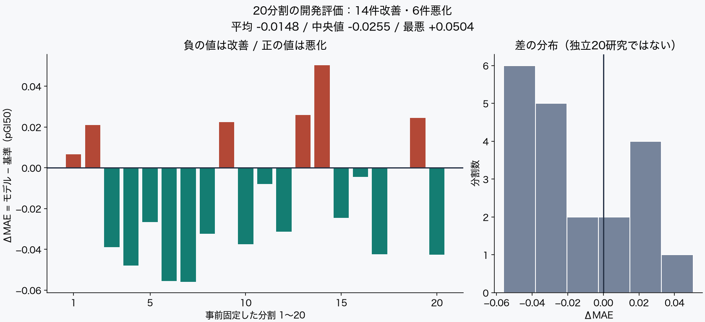
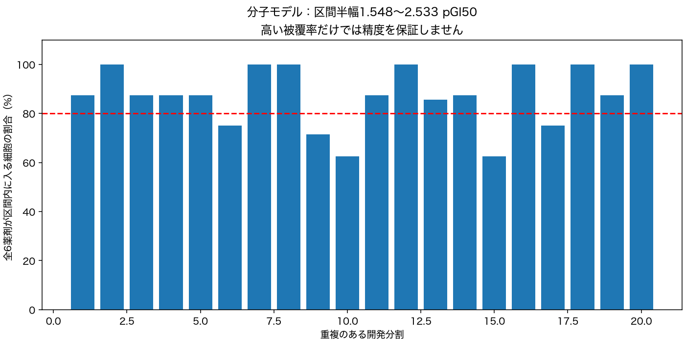

MAEN in three lines
It predicts “at what concentration does this drug work on this cell line” and compares the prediction with the measured lab value.
A personal project by Yuu Honda. The code, computation and writing are mostly done with AI, and nothing here has been reviewed by medical or drug-discovery experts. The data is public NCI data.
Using each cell line’s RNA (gene activity) reduced the average prediction error by about 9%. This is still exploratory and not a settled conclusion.
The same drug works well on some cells and poorly on others
Cancer cells differ in their properties, so the same anticancer drug may stop some cells at a tiny dose while others need much more. For decades the NCI has tested many compounds on a panel of about 60 human cancer cell lines (NCI-60) and published the results.
MAEN uses these public results as the “answer key” and asks: can we predict drug sensitivity for cells the model has never seen?
Get public data
Download lab results for six existing anticancer drugs and cell-line RNA data from NCI’s official sites.
Split the cells
Divide cells into “training” and “answer-check” groups. The check group is not touched until predictions are made.
Predict
Using only the training cells, predict drug sensitivity for the check cells.
Measure the error
Compute the mean absolute error (MAE) between prediction and measurement. Smaller is better.
Measuring sensitivity: GI50
The drug concentration needed to cut cell growth by half. The lower the concentration, the more sensitive the cell. Here it is log-transformed (pGI50) for easier handling.
Reading the error: MAE
A difference of 1 in pGI50 means a 10× difference in concentration. An MAE of 0.55 roughly means predictions are off by about 3.6× on average (geometric mean).
Drugs: doxorubicin, cisplatin, paclitaxel, fluorouracil, methotrexate, etoposide
Comparing three prediction methods
Mean MAE for three methods on the same 44 cell lines and the same 20 splits (shorter bar = smaller error).
① Drug mean
Baseline: use the drug’s average response as the prediction
② + Tissue
Add the typical tendency of each tissue of origin (lung, breast, …)
③ + Molecular (RNA)
Predict from each cell line’s gene activity
③ had lower error than ① in 19 of 20 splits and lower than ② in 18 of 20. Because the same cells are reused across splits, this does not mean “19 independent wins” or statistical significance.

How wide are the prediction ranges?
Each prediction also comes with a range it should fall into (a prediction interval). For the molecular model, the share of cells whose six drug values all fell within the range averaged 87.2%. However, the half-width is 1.548–2.533 pGI50 (tens to hundreds of times in concentration), so the high hit rate partly reflects how wide the ranges are.

Note: “55/55” is the rate at which cell-line identities were matched correctly — not a prediction hit rate.
What we know — and what we don’t
What can be said
- Within these 44 cell lines and 6 drugs, adding RNA information tended to reduce the average error
- The computation is light: about 11 seconds on one CPU thread (excluding downloads)
- All splits are published, including the ones where results were worse
What cannot be said
- That this helps treat patients or finds new drugs
- That it predicts equally well on new, unused data (no independent final evaluation yet)
- That RNA itself caused the improvement (only the molecular model was tuned internally)
This is a personal, AI-assisted practice log and must not be used for medical decisions. It is not endorsed by NCI. See the disclaimer below.
Details and reproducibility
Preprocessing, model selection and leakage control
Official CellMiner 2.15, HG-19, date label 09-11-2025, log2(FPKM+1). 23,808 gene records × 60 cell lines, 0 missing values. Zero values are not treated as missing. Provider-side FPKM processing is used as-is; no raw reprocessing.
Outer training 28–30, calibration 6–8, evaluation 7–8 cells. All six drugs share the same cell partition. Median imputation, top-500 variance feature selection, standardization and PCA are fit on inner 3-fold training data only. PCA 2/5 and Ridge alpha 1/10/100 are selected by inner MAE; outer evaluation is never used for tuning. Lineage representatives were fixed before computing results, and the existing 20 split assignments were kept. Related lineages were reduced to one representative and all three models were recomputed on the same cohort and assignments.
The molecular model is tuned by inner CV; the tissue model uses a fixed shrinkage of 10. This is not a comparison of equally optimized models, nor a causal effect of RNA alone. Interval coverage is descriptive; exchangeability is not established.
Freezing, environment and terms of use
The molecular.py protocol was frozen by a commit before computation. Imported maen.py/robust.py and environment hashes were additionally pinned after review; we do not claim those were frozen in advance. The 14 passing tests are a local run record, not CI.
11.224 s on one CPU thread, excluding download, plotting and publishing. The official 12.2 MB ZIP was downloaded; the raw matrix, per-cell responses, split assignments, held-out IDs and private code are not published. No blanket redistribution permission is assumed.
Official source / Terms of use. Measurement conditions, GI50 censoring and an independent final evaluation remain unresolved. The 8 held-out cells excluded here have also been used before.
MAE for all 20 splits
| seed | Drug mean | Tissue | Molecular |
|---|---|---|---|
| 20262001 | 0.60676 | 0.61848 | 0.59497 |
| 20262002 | 0.59834 | 0.61469 | 0.54597 |
| 20262003 | 0.59920 | 0.57384 | 0.50564 |
| 20262004 | 0.63684 | 0.59126 | 0.52255 |
| 20262005 | 0.68002 | 0.66629 | 0.66227 |
| 20262006 | 0.66339 | 0.59873 | 0.63236 |
| 20262007 | 0.58108 | 0.51833 | 0.51763 |
| 20262008 | 0.67575 | 0.64204 | 0.60010 |
| 20262009 | 0.58791 | 0.61086 | 0.60458 |
| 20262010 | 0.63202 | 0.60213 | 0.56232 |
| 20262011 | 0.54645 | 0.54093 | 0.43990 |
| 20262012 | 0.64457 | 0.61010 | 0.55536 |
| 20262013 | 0.55410 | 0.58195 | 0.52009 |
| 20262014 | 0.59156 | 0.65358 | 0.57023 |
| 20262015 | 0.62850 | 0.59973 | 0.55066 |
| 20262016 | 0.61919 | 0.63110 | 0.56594 |
| 20262017 | 0.62450 | 0.57631 | 0.60239 |
| 20262018 | 0.59086 | 0.58553 | 0.50056 |
| 20262019 | 0.59853 | 0.63635 | 0.56310 |
| 20262020 | 0.49926 | 0.44086 | 0.40197 |
The smallest value in each row is shown in green.
In the previous 20-split results, related lineages crossed partitions in 18 of 20 splits. We do not assert the numbers are wrong, but keep them as qualified history. The old tissue result (0.58265) should not be compared directly with the current molecular result.
Disclaimer
By using this site, you acknowledge the following.
1. A personal record run with AI
MAEN is a personal hobby project. The code, the computations, the interpretation of results and the text on this page are produced mainly with AI (large language models). AI can produce errors that sound plausible, and the operator is not in a position to verify the content professionally. Nothing here has been supervised or peer-reviewed by experts in medicine, pharmacology or statistics.
2. Not medical advice
Nothing here may be used for diagnosis, treatment, prevention or medication decisions, and nothing here recommends or discourages any drug or therapy. The data comes from cultured cancer cells, which is different from how drugs act in the human body. For any illness or treatment, always consult a physician, pharmacist or other qualified professional. Do not start, change or stop any treatment because of this site.
3. No warranty of accuracy
Computations, data processing and descriptions may contain errors. The operator makes no warranties, express or implied, regarding accuracy, completeness, usefulness, timeliness or fitness for a particular purpose. Source data reflects the time it was retrieved and may since have been updated.
4. No liability
The operator accepts no liability for any damage arising from the use of, or inability to use, information on this site — including health or financial harm and errors in research or business decisions. Use the information at your own judgment and risk. If you cite or use it in research, papers or work, always verify against primary sources (official NCI data and peer-reviewed literature).
5. Not affiliated with NCI
This site uses public data from the U.S. National Cancer Institute (NCI) but has no affiliation with NCI, the U.S. government or related institutions, and is not endorsed, recommended or approved by them. Data use is subject to each provider’s terms.
6. Subject to change without notice
Content may be corrected, updated or removed without notice. Past results are kept as records, but errors or caveats may be found later. We are not responsible for the content of linked external sites.
This English page is a translation for convenience. If it differs from the Japanese page, the Japanese version prevails.